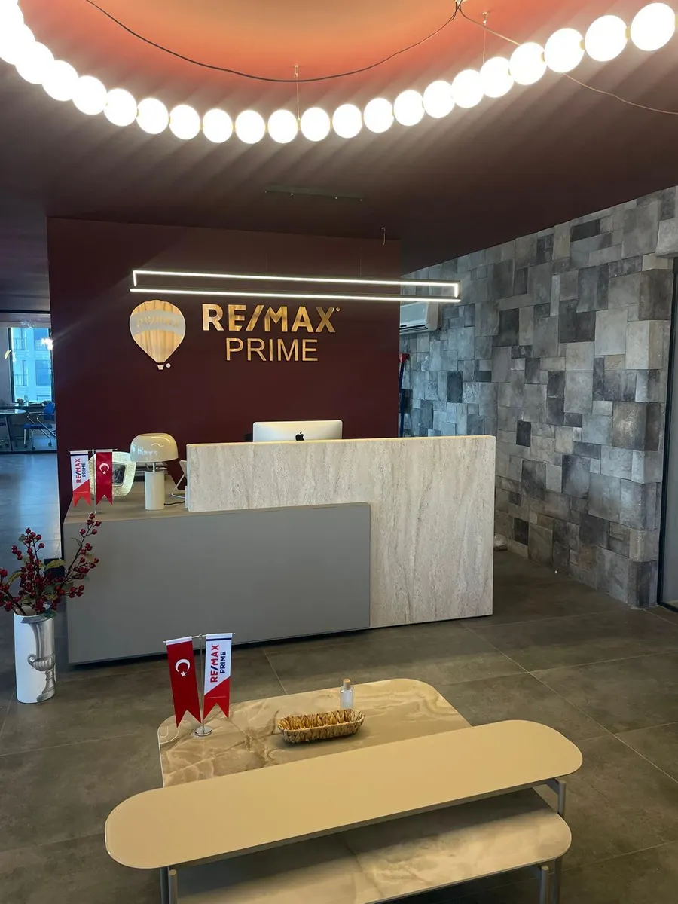
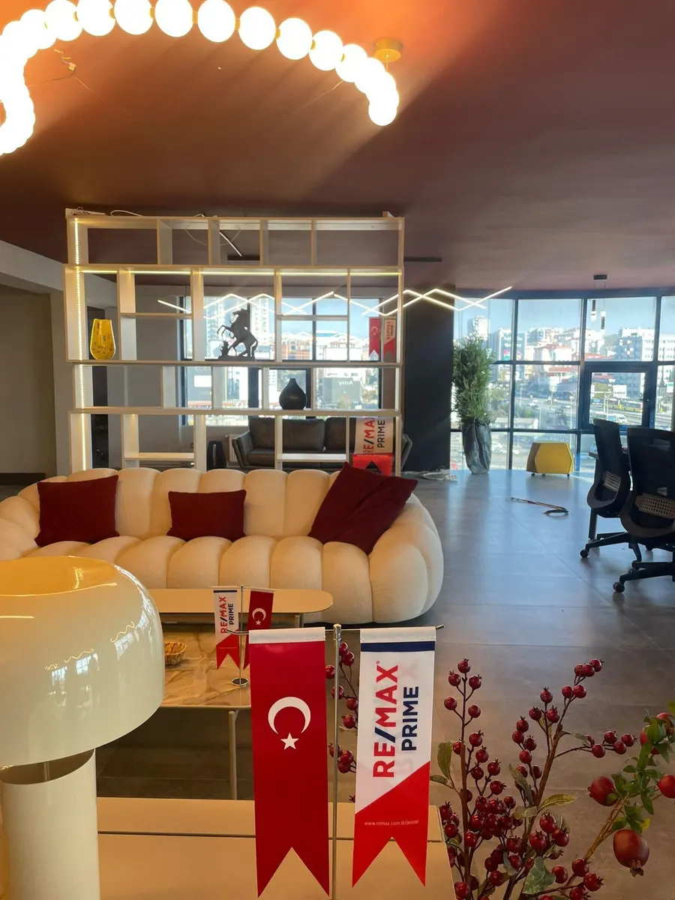
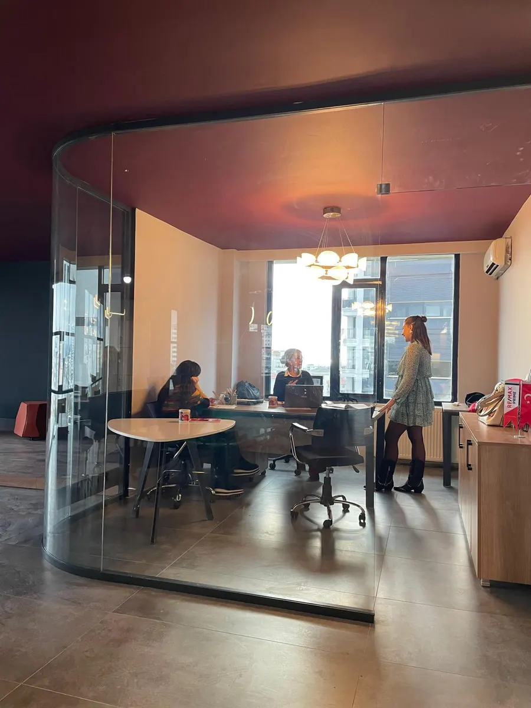
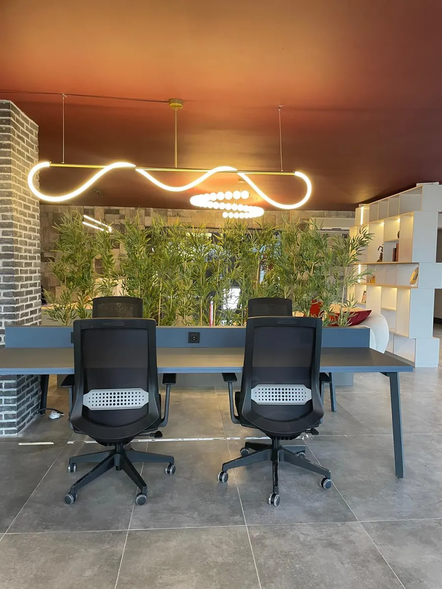
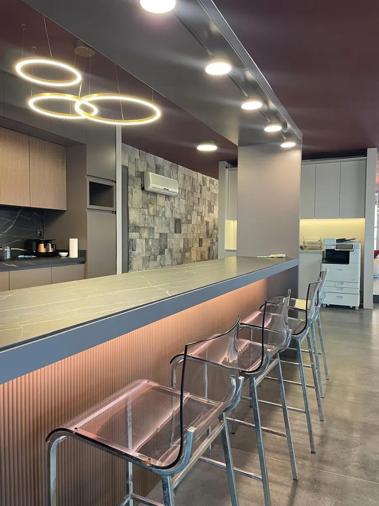
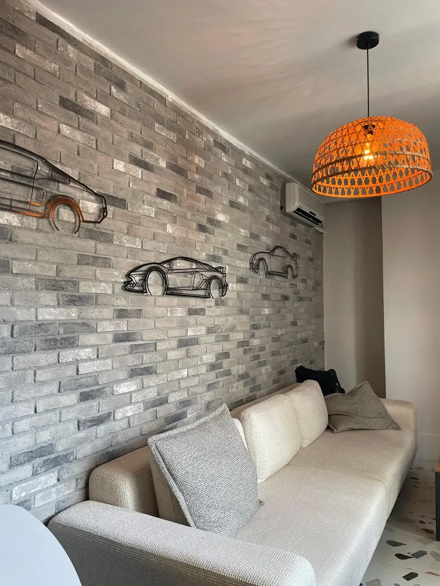

Karşılama & Resepsiyon

Lounge & Müşteri Alanı

Görüşme & Toplantı Masası

Açık Çalışma Alanları

Kafe & İkram Barı

Mola & Dinlenme Köşesi
Hakkımızda
Bostancı Tavukçuoğlu İş Merkezi'nde yer alan RE/MAX Prime ofisimiz; geniş çalışma alanları, lüks toplantı odaları ve müşteri ağırlama lounge bölümleriyle bölgedeki en kaliteli gayrimenkul danışmanlık hizmetini sunmak üzere tasarlanmıştır.